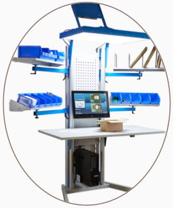
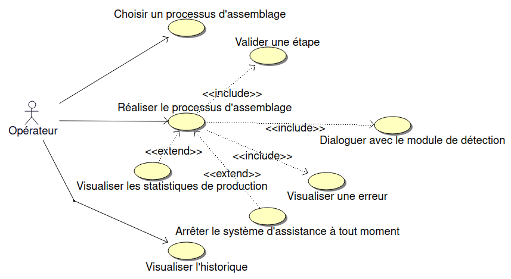
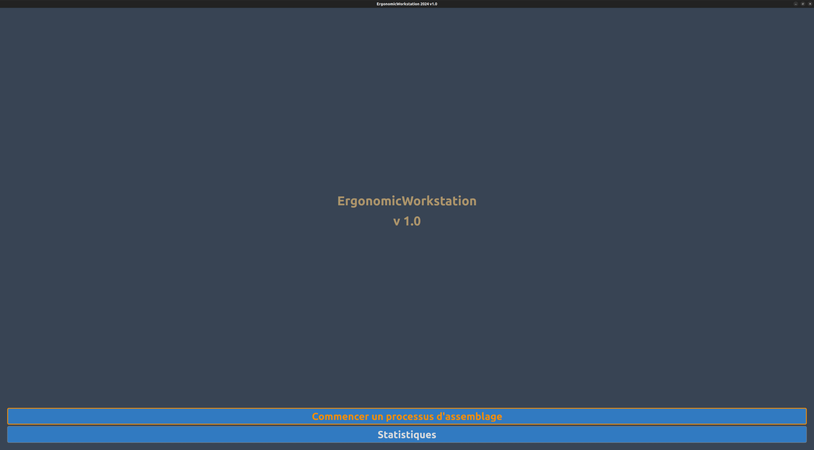
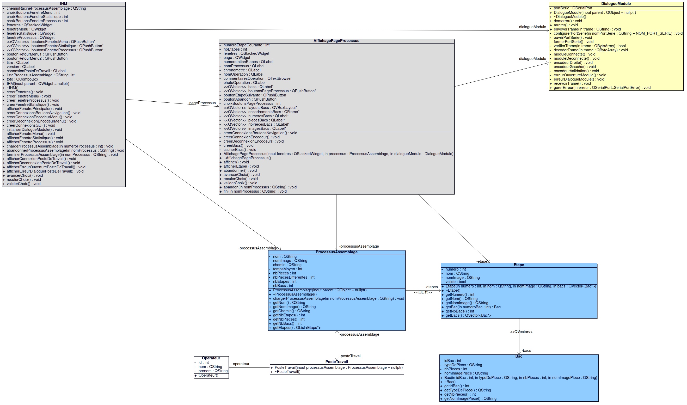
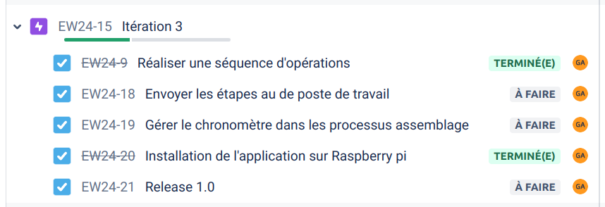
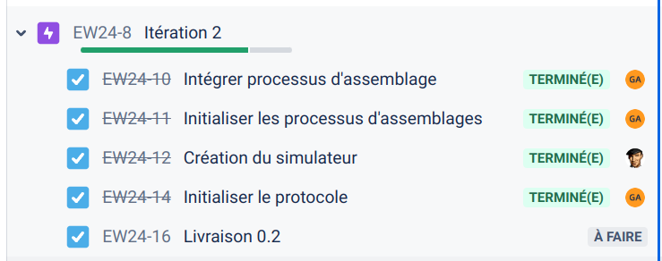
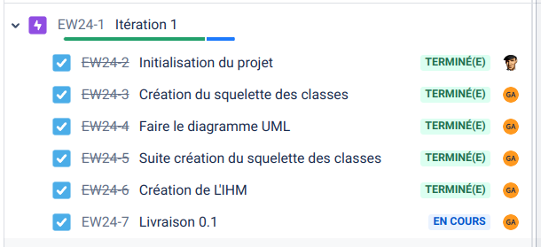

|
Projet ergonomic-workstation
1.0
BTS SNIR LaSalle Avignon 2024
|
|
Projet ergonomic-workstation
1.0
BTS SNIR LaSalle Avignon 2024
|


Il s'agit de digitaliser un poste de travail afin de guider l’opérateur pas à pas dans la réalisation d’un processus d’assemblage.


La table ergonomique devra être capable de proposer plusieurs processus d'assemblage et d'accompagner l'opérateur durant le processus d'assemblage.
| Fonctionnalités | Validation |
|---|---|
| Visualiser tous les processus d’assemblage | OUI |
| Choisir le processus d’assemblage | OUI |
| Séquencer les opérations | OUI |
| Arrêter le système à tout moment | OUI |
| Communiquer avec le poste de travail (liaison série) | OUI |


Format : $[TYPE];[DONNEE]\n
Type de trame : ‘E’ (encodeur)
Donnée :
‘1’ pour droite‘2’ pour gauche‘3’ pour validationExemples :
$E;2\n l'encodeur a été” déplacé d’un “cran” vers la gauche$E;3\n appui sur l’encodeur| Tâche | Priorité | Itération |
|---|---|---|
| Séquences les opérations | H | 2 |
| Visualiser les statistique de production | B | 3 |
| Visualiser tous les processus d’assemblage | H | 1 |
| Arrêter le système à tout moment | M | 3 |
| Choisir un opérateur | B | 3 |
| Détecter une erreur | M | 2 |
| Choisir le processus d’assemblage | M | 2 |
| Communiquer avec le poste de travail (liaison série) | M | 2 |



https://btssn-lasalle-84.github.io/ergonomic-workstation-2024/
©️ LaSalle Avignon 2024